Most people start planning a nursery by picking individual pieces, a crib here, a rug there, a mobile that caught their eye online.
Flip that order and the whole process gets easier. Choose a complete design direction first, then shop for the specific pieces that fit it.
A clear direction is really what keeps a nursery from turning into a collection of cute, unrelated purchases that never quite add up to a finished room.
The 14 directions below each follow their own internal logic, and nearly all of them can work on a modest budget just as well as a generous one.


1. Nature-Inspired
Real or faux plants, natural wood tones, and soft greens and browns bring a sense of the outdoors inside.
This direction suits parents who want a theme that feels organic rather than overtly decorated.
It pairs especially well with the woodland look further down this list, and the two can borrow freely from each other.
A nature-inspired room also tends to feel genuinely peaceful without needing much else layered on top.
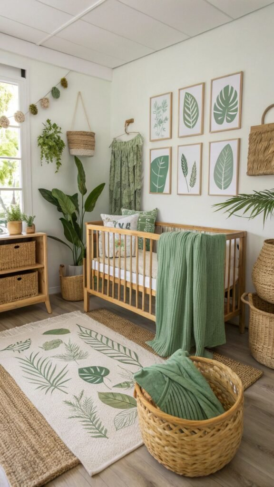
2. Built Around Personal Touches
A name spelled out above the crib, a repurposed family heirloom, or a handmade quilt all make a nursery feel specific instead of generic.
This direction layers neatly on top of almost any other style on this list rather than replacing it outright.
A handful of genuinely meaningful objects will outdo a room full of matching store-bought pieces every time.
It's also often what parents end up remembering most fondly once the room gets repurposed down the line.
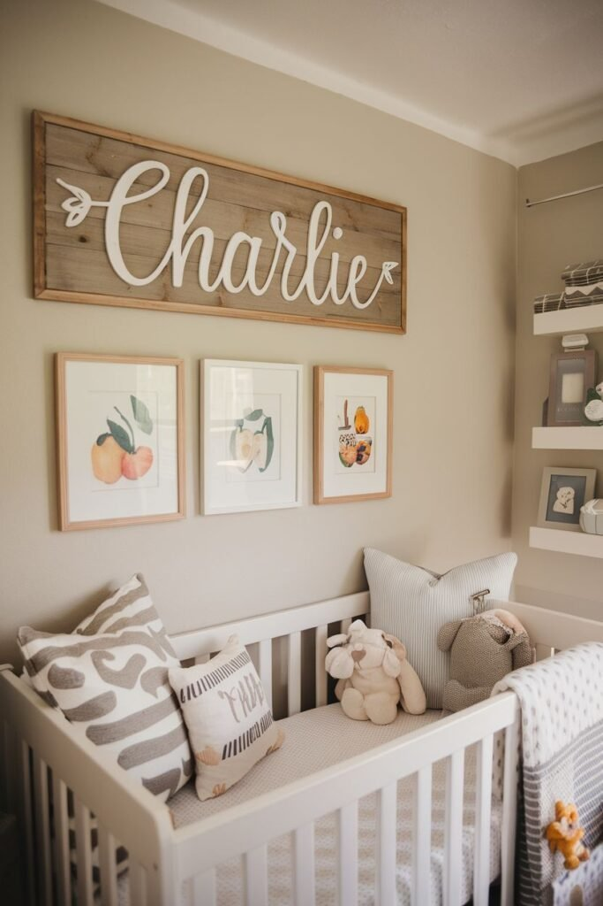
Personalized Wooden Name Sign for Nursery, Custom Baby Name Door and Wall Decor
Shop on Amazon3. Built Around Convertible Furniture
A crib that converts into a toddler bed, or a dresser that doubles as a changing table, stretches the room's usefulness well past the infant stage.
This direction is as much a budget decision as a style one, since it means fewer furniture purchases over the next several years.
It suits parents who'd rather invest upfront in fewer, higher-quality pieces than keep replacing cheaper ones.
The room's overall look stays secondary here to how long each piece will genuinely stay useful.
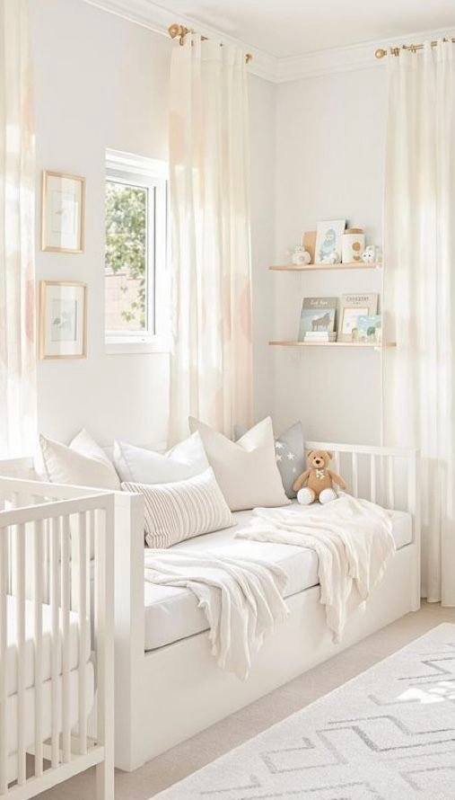
4. Built Around Statement Lighting
One standout fixture, a woven pendant, a sculptural lamp, a soft cloud-style light, can anchor the entire room's mood on its own.
Layering a dimmable lamp in alongside it means late-night feedings don't require flipping on a full bright light.
This direction suits a smaller nursery especially well, since one strong statement piece accomplishes more than several smaller ones.
Warm-toned bulbs matter here just as much as the fixture itself.
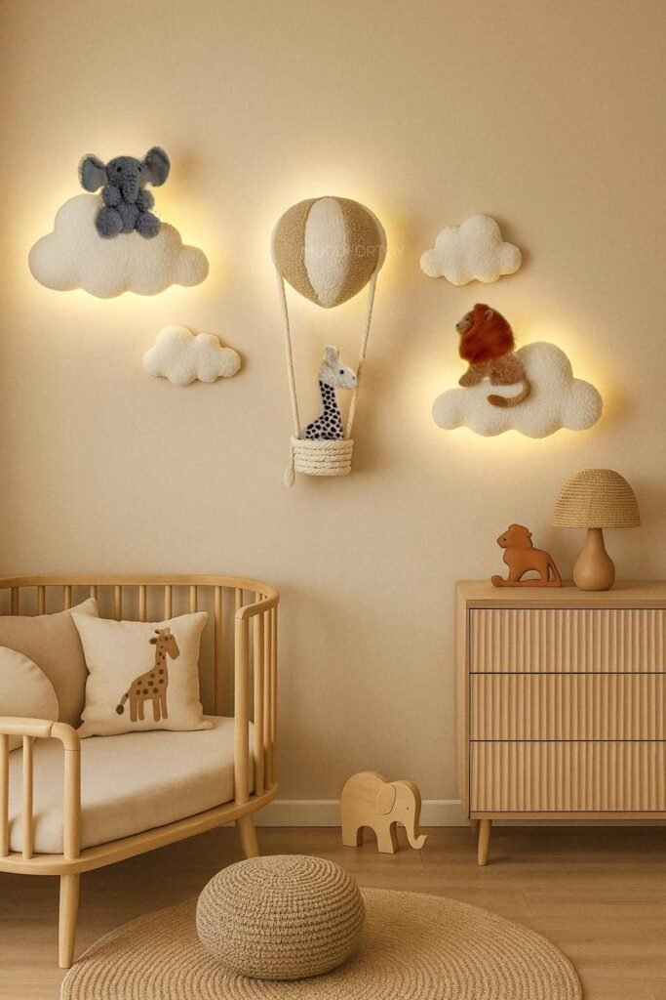
YISUN Cloud Night Light, Rechargeable Silicone Nursery Lamp for Baby and Toddler
Shop on Amazon5. Built Around a Reading Corner
A comfortable glider, a small side table, and a soft reading light can turn one corner into a dedicated spot for feeding and bedtime stories.
This direction has less to do with the room's overall look and more to do with carving out one genuinely functional zone.
Keeping that corner separate from the crib and the changing area helps the whole room feel organized by activity rather than by object.
It also tends to be one of the few spots in the nursery a parent ends up using just as much as the baby does.
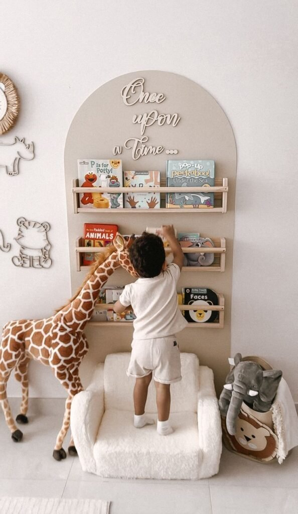
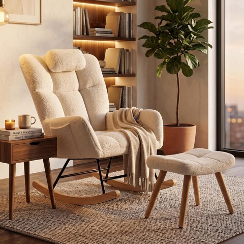
Garvee Nursery Rocking Chair with Ottoman, High Backrest and Lumbar Pillow
Shop on Amazon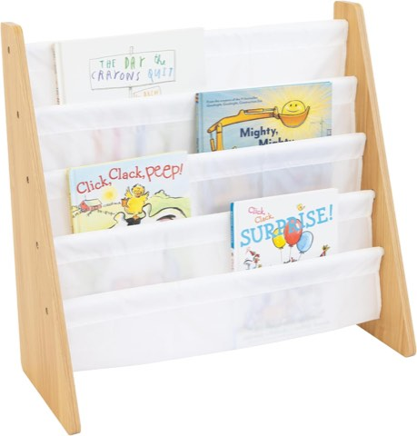
Humble Crew Montessori Kids Bookshelf, 4 Tier Front-Facing Toddler Bookcase
Shop on Amazon6. Built Around Smart Storage
A nursery accumulates more small items than almost any other room in the house, and it happens faster than most people expect.
Baskets, labeled bins, and furniture with built-in storage keep that accumulation from spilling onto every available surface.
This direction puts function first and lets the overall aesthetic follow from whatever storage system actually gets used day to day.
A room that's easy to keep tidy also stays easier to enjoy, especially during the exhausting, sleep-deprived early months.
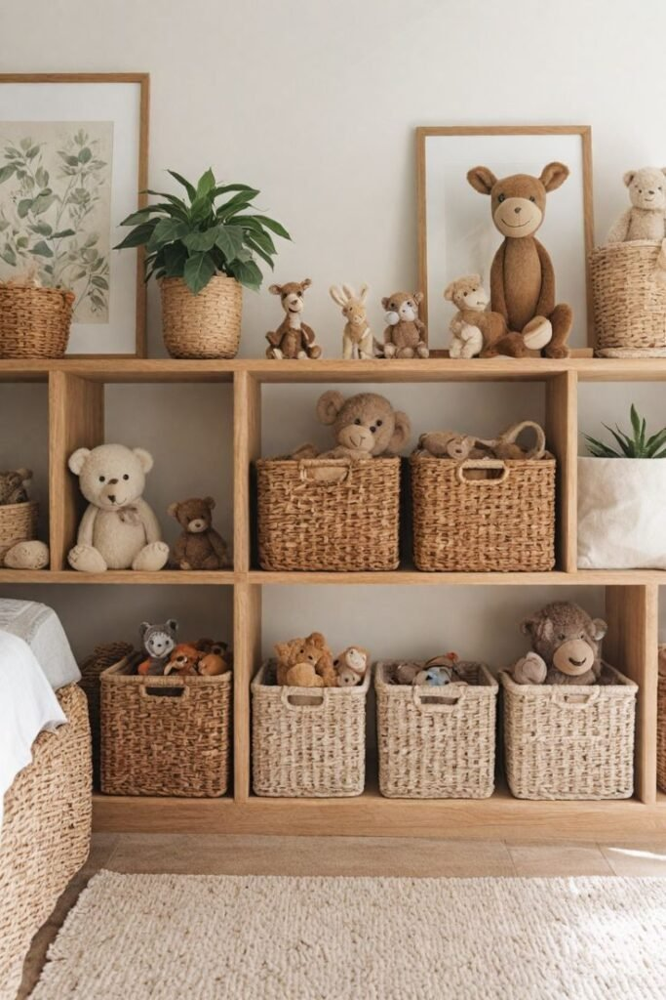
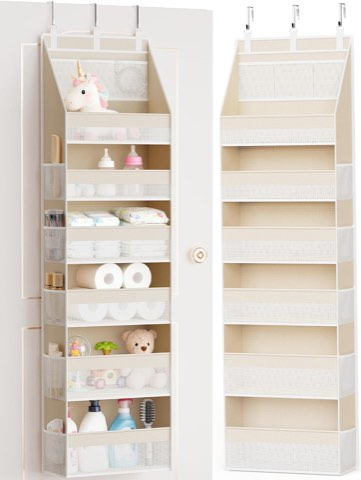
Criusia Over the Door Organizer, 6 Shelf Hanging Closet Storage with 13 Mesh Pockets
Shop on Amazon7. Built Around Creative Wall Decor
A gallery of mismatched prints, a mural, or a single oversized piece of art can carry an entire room's personality on its own.
This is a solid direction for parents who want something custom without touching furniture or paint.
It's also one of the easiest directions to update later as a child's own taste starts to develop.
Keeping artwork mounted at a safe height and genuinely secured matters here more than in almost any other room of the house.
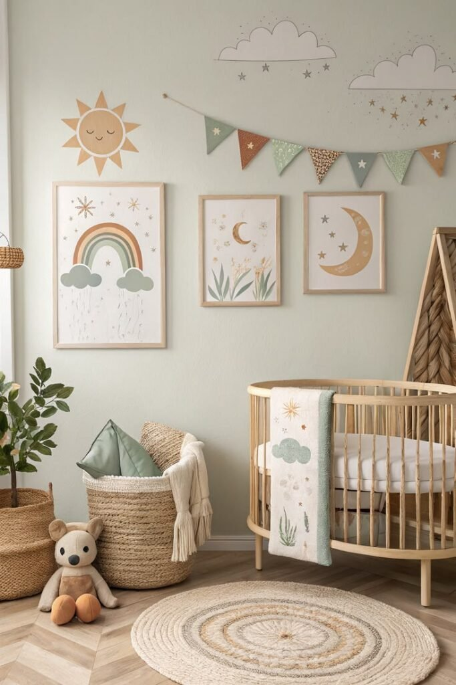
8. Luxury-Inspired, Not Luxury-Priced
A few higher-end-looking touches, a statement light fixture, a quality rug, a well-made glider, can carry an entire room's perceived value.
The real trick involves spending on the two or three pieces that get noticed first and keeping everything else simple around them.
A fluted or paneled accent wall adds a custom, built-in look for relatively little cost compared with actual millwork.
This direction is really about where the budget gets allocated, more than it is about the total amount spent.
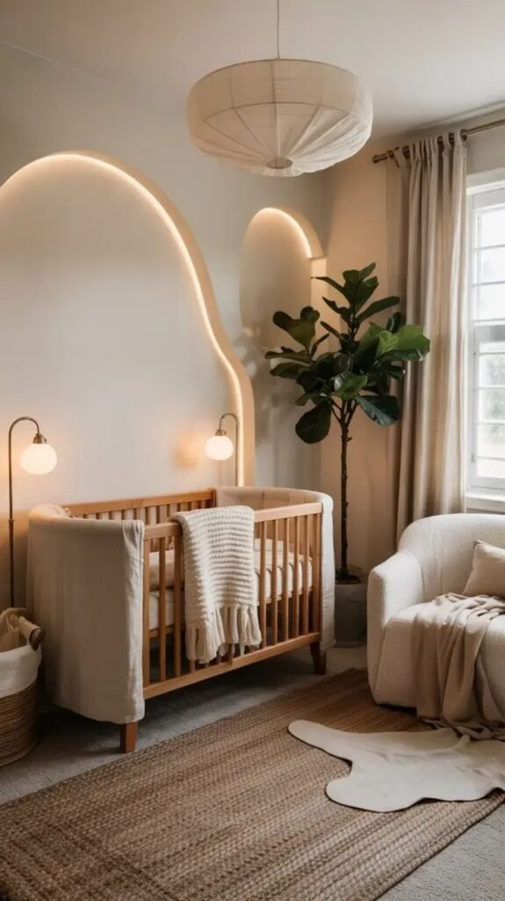
9. Gender-Neutral
Sage green, warm yellow, terracotta, and soft gray all work beautifully here, skipping the classic pink-or-blue default entirely.
This direction also tends to stay relevant for a second child later on, regardless of that child's gender.
Pattern and texture end up carrying more of the visual interest once color gets kept this restrained.
It's one of the more popular directions, too, for parents who find out the gender late in pregnancy or not at all.
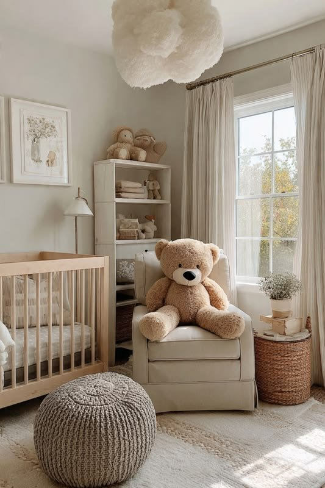
10. Built for a Small Space
This one isn't really a style so much as a set of constraints, and those constraints end up changing every other choice that follows.
Vertical storage, a compact glider, and furniture that pulls double duty all matter more here than they would in a larger room.
A mini crib, or a crib that converts early, saves real floor space during that first demanding year.
Every other direction on this list can still apply here, just scaled down and edited more tightly than usual.
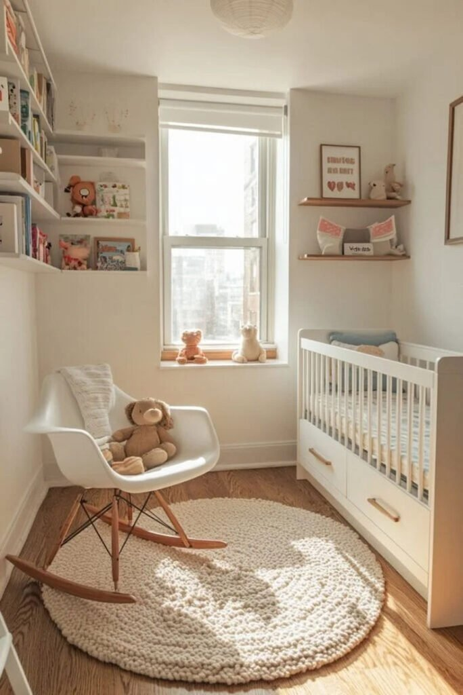
11. Woodland
Forest animals, muted greens and browns, and natural wood furniture build this direction without ever tipping into anything cartoonish.
A few well-chosen illustrated prints go considerably further than wall-to-wall themed wallpaper.
This direction suits parents who want a theme, just not one that feels overly literal or juvenile.
It also pairs naturally with real plants, which pull double duty as both decor and a nod to the nature-inspired direction above.
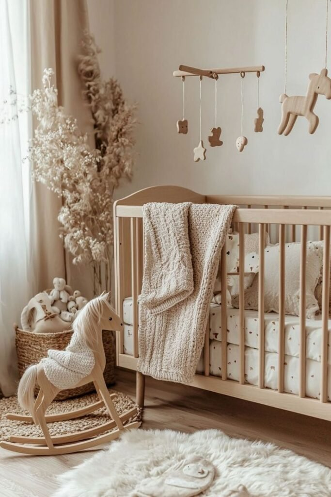
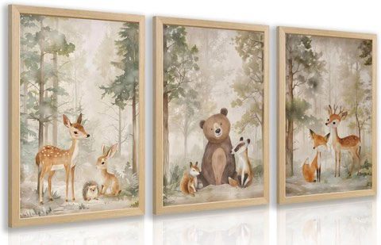
LLEEMPI Woodland Animal Nursery Wall Art Set of 3, 12 x 16 Inch Wood Framed Prints
Shop on Amazon12. Modern Minimalist
Clean lines, a restrained color palette, and very little actually on display define this direction more than anything else.
Furniture does the visual work here instead of decor, since a well-designed crib or dresser really doesn't need much around it.
This direction photographs well, sure, but it also genuinely reduces visual clutter in a room that fills up fast no matter what.
It suits a parent who wants a calm space more than a heavily themed one.
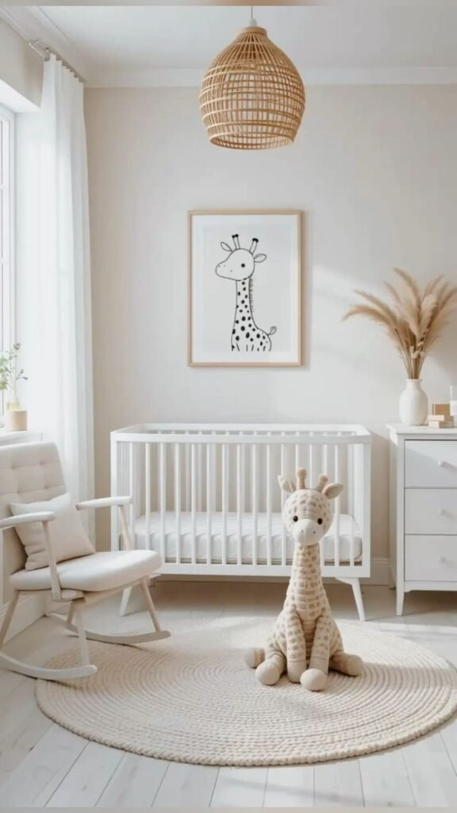
13. Boho
Woven textures, macrame, rattan furniture, and a slightly imperfect, collected feel all define this direction.
Layering is really the main technique at work, a textured rug, a woven wall hanging, a mix of natural materials stacked together.
This suits anyone whose existing home already leans toward warm, textural spaces.
It also tends to feel less precious than other directions, which can be a genuinely practical advantage once a newborn is in the mix.
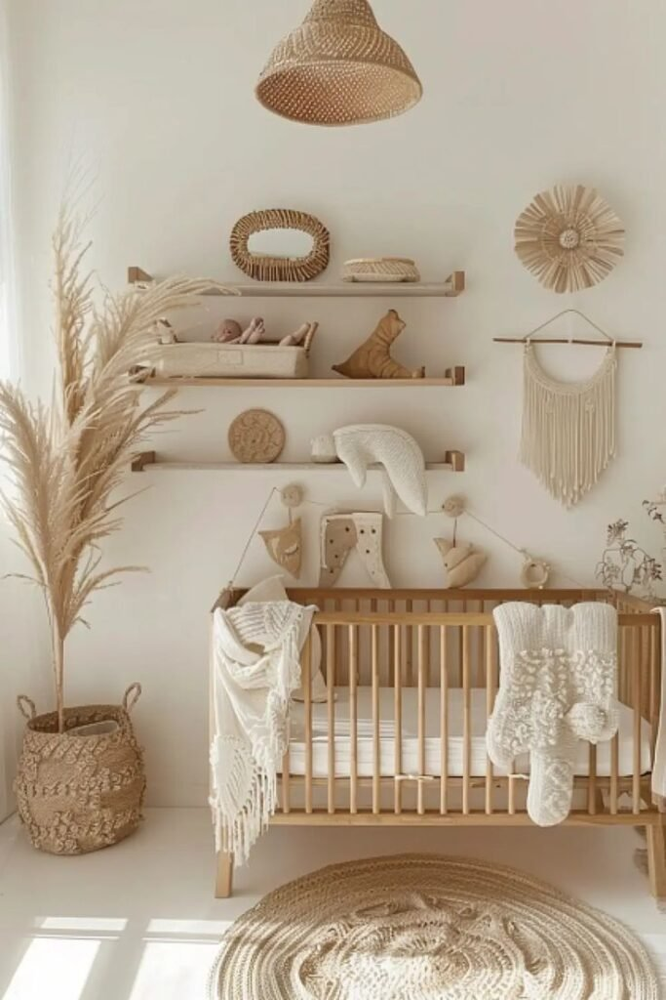
14. Neutral and Timeless
Soft whites, warm beiges, and muted taupes make up the bulk of this direction.
It ages well past infancy, too, since nothing about it reads as babyish once the room eventually needs to grow up a little.
This is the lowest-risk direction by far for anyone who doesn't want to repaint in two years.
Texture does most of the visual work here, since color variation gets kept minimal on purpose.
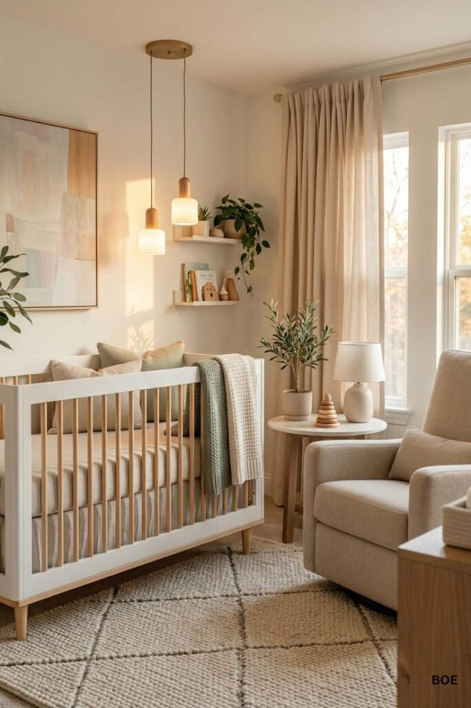
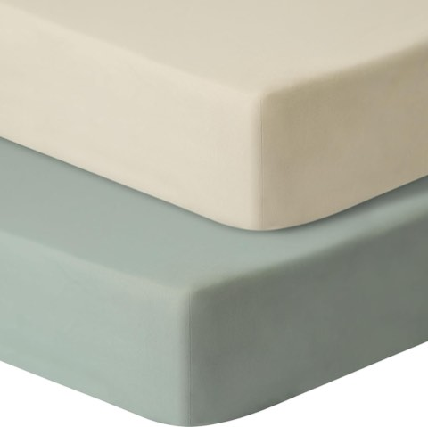
GUNTAIL Fitted Crib Sheets, 2 Pack, for Standard Crib and Toddler Mattress
Shop on Amazon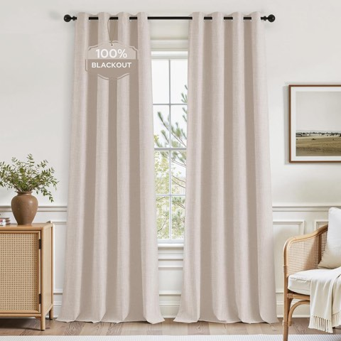
HOMEIDEAS 100% Blackout Beige Faux Linen Curtains, 52 x 84 Inch, 2 Panels
Shop on AmazonSafety Comes Before Any Style Choice
Every single direction on this list still has to follow the exact same baseline safety rules, no exceptions made for aesthetics.
A firm crib mattress, no loose bedding or pillows anywhere in the crib, and furniture properly anchored to the wall all apply no matter which look gets chosen.
Cords from blinds or lamps need to stay well out of reach of the crib at all times.
None of the styling choices above should ever take priority over these basics.
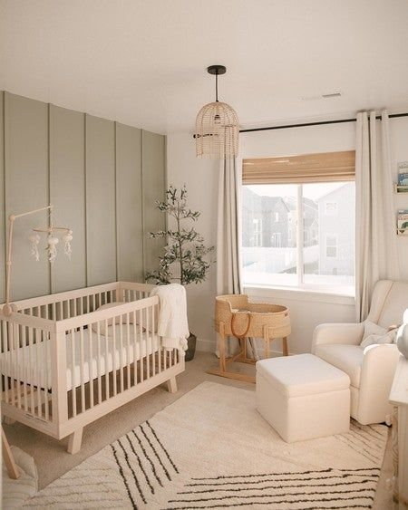
What Actually Makes a Nursery Work
A nursery that genuinely functions well almost always has three things in common: a clear layout, a calming color story, and enough room to actually move around the crib and changing area.
Style matters, sure, but it comes second to whether the room is genuinely usable at 3 a.m. with a crying infant and very little patience left.
Starting with function first, then layering style on top afterward, tends to produce a room that holds up better across the entire first year.
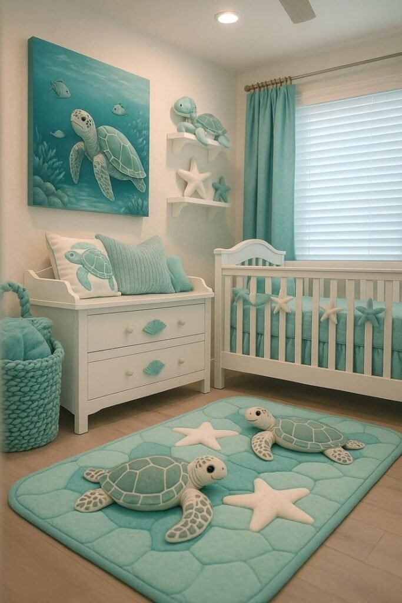
Final Thoughts
Picking one of these 14 directions before shopping saves real money and a lot of second-guessing later on.
A nursery built around a clear direction holds together visually even as individual pieces get added gradually over time.
Safety always comes first here, no matter which direction ends up getting chosen in the end.
After that, the best direction really is just whichever one matches how the room will actually get used day to day.